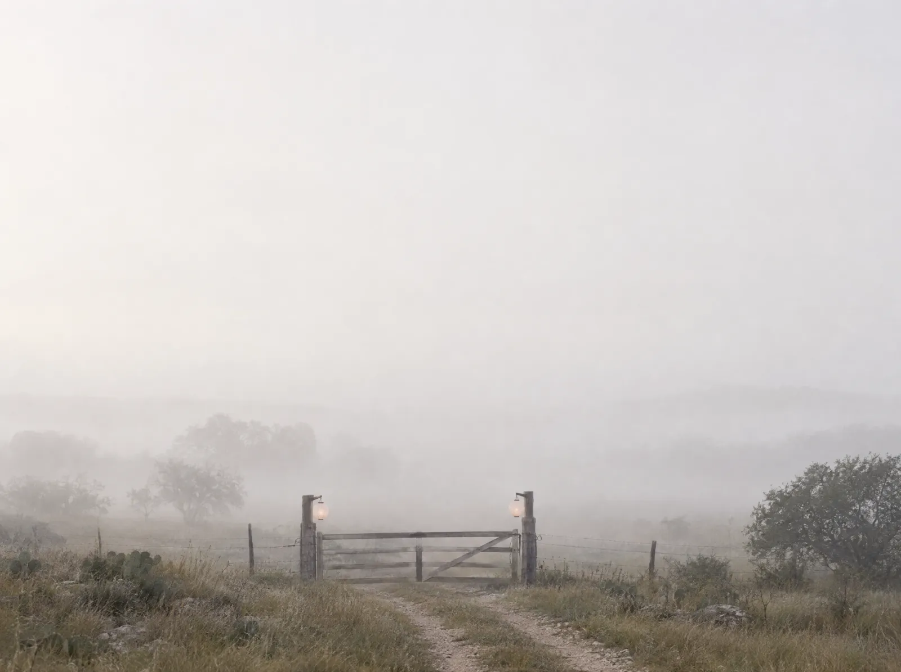
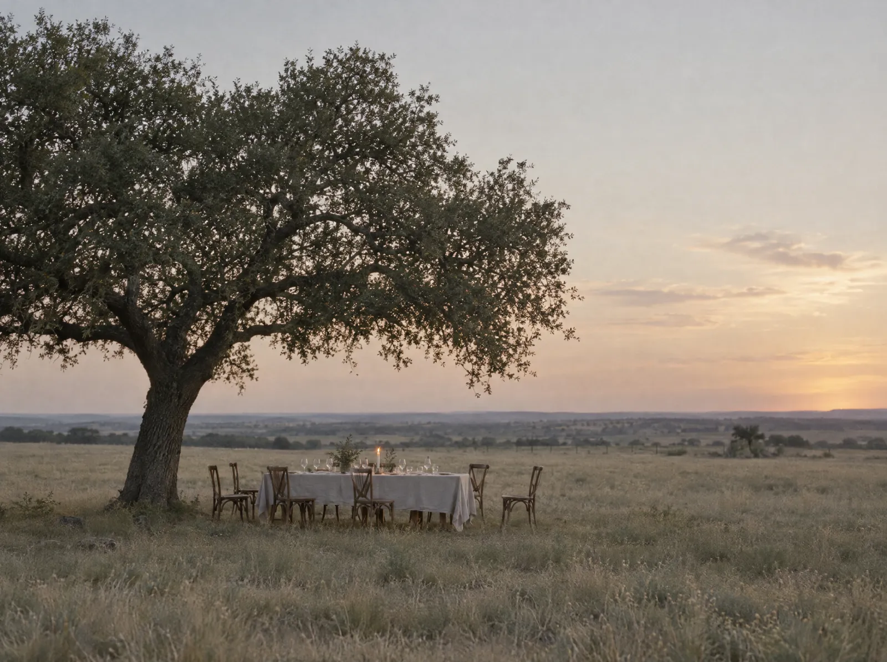
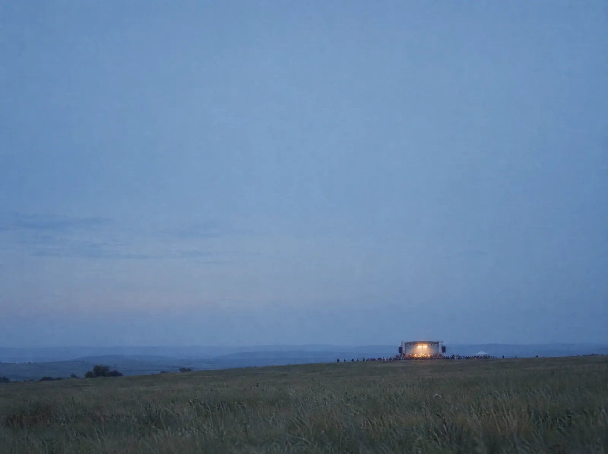
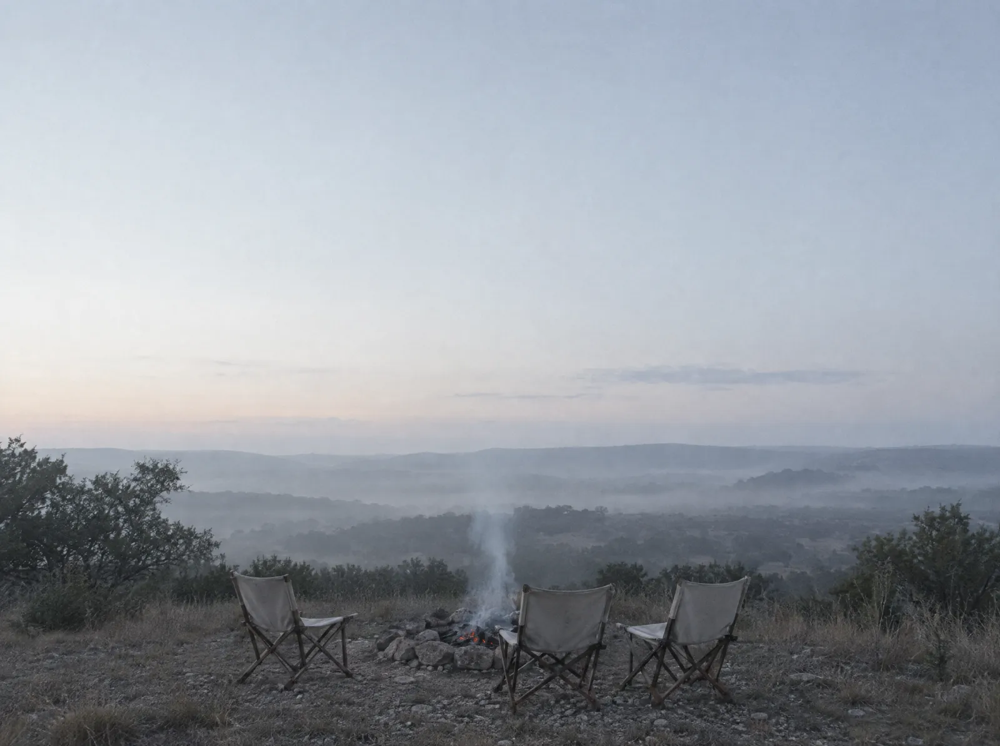

Cale Yarborough, producer of the Gryphus Music Festival
Some nights stay with you for the rest of your life.
Cale builds them. One festival day follows, dawn to campfire, in four frames. Sound is optional and changes with the hour.
A gift concept from Gordon's team. Cale's mark and Gordon's photograph are real; the four frames are illustrations made with Higgsfield.


First light
It starts before the gate opens.
Long before anyone arrives, someone decided who should be here, and why.
Who would you want beside you when it begins?

Dusk
Find the right people. Build the right room.
Great experiences are built by collectives, not org charts. Connect brand to consumer and brand to brand, in ways that land in the room and travel out of it.
When did a room last change your mind?

Night
A moment people can feel.
The work starts with the brief and ends here. Not a deliverable. A feeling a crowd carries home.
Gryphus Music Festival, April 24 to 26, 2026, Flat Rock Ranch in Comfort, Texas: nine acts, ten sets, three days. See the real schedule
What do you want them to feel?

Late
It started as a friend's ranch party.
Now people buy wristbands for it. The best events leave people a little better than they arrived.
Next, Gryphus 2027: April 29 in San Antonio, then April 30 to May 2 at Flat Rock Ranch.
What will they remember next year?
What is real: the schedule that ran the 2026 show, and the mark for the next one.

Quality you can feel. Moments that make people think.
Quality
Small teams who care more than they should. Production craft held to the standard of the moment, not the budget line.
Feeling and thought
An experience should move people and leave them with a question worth carrying home.
Elevation
Events that lift people through what they live together, from a SXSW launch night to a field in the Hill Country.

And one that was not illustrated